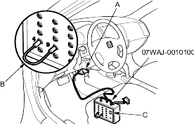
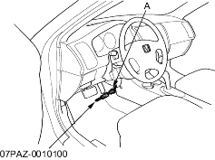

Except KB, KE, KG, TR models:
NOTE: Use this procedure when the PGM Tester software does not match the year/model vehicle you are working on.
- With the ignition switch OFF, connect the DLC terminal box (A) to the 16P Data Link Connector (DLC) (B) located under the dash on the driver's side of the dashboard.

*: The illustrstion shows LHD model.
- With the vehicle on the ground, set the front wheels in the straight ahead driving position.
- Connect the DLC terminal box terminals No. 4 and No. 9 with a jumper wire (C), then push the switch (D).
KB, KE, KG, TR models:
- With the ignition switch OFF, connect the SCS short connector to the service check connector (2P) (A) located under the dash on the driver's side of the vehicle.

*: The illustrstion shows LHD model.
- With the vehicle on the ground, set the front wheels in the straight ahead driving position.
- Turn the steering wheel 45 degrees to the left from the straight ahead driving position, and hold the steering wheel in that position.
- Turn the ignition switch ON (II). The EPS indicator comes on, then it goes off after 4 seconds.
- Within 4 seconds after the EPS indicator goes off, return the steering wheel to the straight ahead driving position and release the steering wheel.
The EPS indicator comes on again 4 seconds after releasing the steering wheel. - Within 4 seconds after the EPS indicator comes on, turn the steering wheel 45 degrees to the left again and hold it in that position.
The EPS indicator goes off after 4 seconds. - Within 4 seconds after the EPS indicator goes off, return the steering wheel to the straight ahead driving position again and release the steering wheel. The EPS indicator blinks twice 4 seconds after releasing the steering wheel, indicating that the DTC was erased.
NOTE: If the EPS indicator does not blink twice, an error was made in the procedure and the DTC was not erased. Turn the ignition switch OFF, and repeat the operation from the step 3. - Turn the ignition switch OFF after the EPS indicator blinks twice.
- Disconnect the DLC terminal box or SCS short connector from the DLC.
- Perform the DTC code output operation, and be sure that the code has been erased.